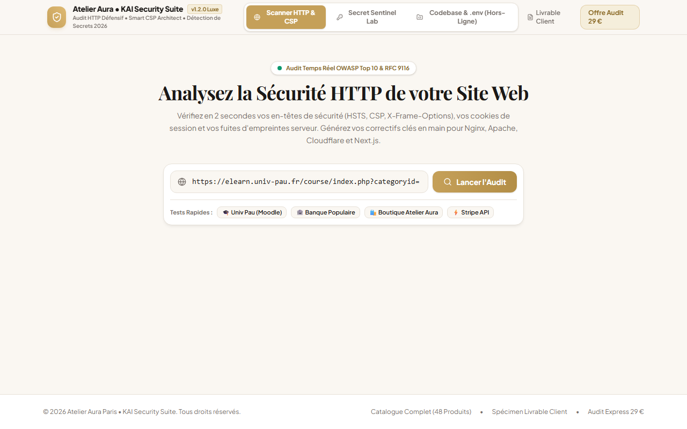
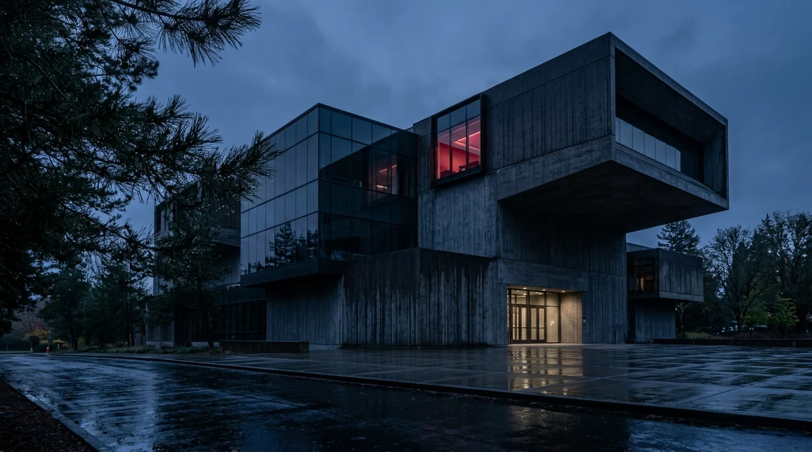
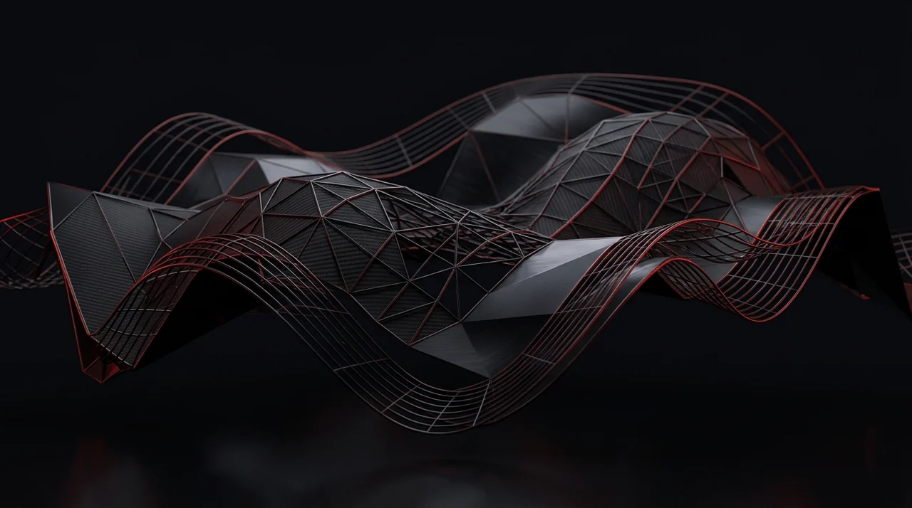

APPSEC · MCP · LICENCE MIT · SMITHERY / GLAMA
GitHub ↗
Durci par Security Scanner MCP : politique CSP stricte, HSTS preload, anti-clickjacking et divulgation RFC 9116.

Je suis Matéi de Saint Léger, étudiant en BUT Informatique à l'IUT de Bayonne–Anglet. Plutôt qu'une simple liste de technologies, ce portfolio raconte — et vous laisse tester en direct — mes chantiers d'ingénierie les plus exigeants : 46 Pull Requests fusionnées en open-source, le tableur spatial ZenWorkspace v2.0, le portail Kai Study et son infrastructure Cloud 24/7.
Sur le CRM open-source Twenty, certaines mutations metadata (VIEWS / LAYOUTS) n'appliquaient pas le garde de permission dédié, et les suppressions par lot ORM contournaient la capture d'événements. J'ai verrouillé les contrôleurs NestJS et couvert le cycle de suppression sous Vitest.

Les flags -Werror transforment tout avertissement (variable non initialisée, conversion implicite) en erreur bloquante dès la compilation, tandis que Valgrind Memcheck vérifie à l'exécution 0 octet perdu et 0 lecture hors-bornes sur le tas.
Intervalle SM-2 actuel : +1 jourDécoupe chaque flux en tâches indépendantes reliées par un graphe acyclique dirigé (DAG) en Python Asyncio, évitant les scripts monolithiques fragiles et permettant la reprise ciblée sur erreur.
Durci par Security Scanner MCP : politique CSP stricte, HSTS preload, anti-clickjacking et divulgation RFC 9116.

Ingénierie bas-niveau et algorithmique temps réel : extracteur FEN d'échiquier (OpenCV / Stockfish NNUE UCI), structures mémoire en C99 pur (lru_cache.c, Dijkstra) et moteur physique 60 fps.
Cliquez ou survolez chaque étape pour parcourir les repères concrets de mon parcours (formation, stages en entreprise, immersions au Royaume-Uni et discipline échiquéenne).




Sérieux, calme et autonome sur Git, Python, TypeScript, C/C++ et Linux, je recherche une alternance en 2e année de BUT Informatique (Parcours A — Réalisation d'applications). Véhiculé sur Biarritz, Anglet, Bayonne et Bidart, ouvert à l'hybride et au remote.
matei64200@gmail.com